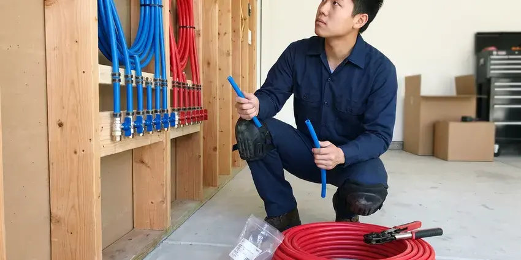

Water Leak Detection in Fairbanks, AK
CKN Plumbing provides professional water leak detection for homeowners across Fairbanks, AK. We're equipped to find even the most elusive leaks, preventing further problems.
- Same-Day Water Leak Testing
- Modern Technology
- Minimize Property Damage
- Fast Leak Identification

Get Dependable Water Leak Detection in Fairbanks, AK.
Don't let a hidden leak cause extensive damage to your home. Contact CKN Plumbing for prompt and reliable service.
Accurate Water Leak Detection Services in Fairbanks, AK
CKN Plumbing specializes in identifying and resolving all types of water leaks, from visible drips to hidden slab leaks. Our team in Fairbanks uses non-invasive methods to precisely locate the source, preventing further damage to your property's foundation and structure.
Our expertise includes:
- Toilet, faucet, softener and water heater leak troubleshooting
- Smart shutoff valves and leak sensors from Moen Flo and Phyn
- Slab leak detection and repair.

Additional Plumbing Maintenance Services in Fairbanks, AK
Our maintenance and specialty plumbing services in Fairbanks, AK catch small problems before they become emergencies.


Customers
Why Choose CKN Plumbing for Water Leak Detection in Fairbanks, AK?
We look at the whole system instead of jumping to one suspect. That way you do not pay to fix a toilet when the real leak is a cracked irrigation line.
- Advanced Tools, We use professional acoustic listening devices, thermal imaging cameras and moisture meters for non-invasive leak detection.
- Bill Explained, We help you match water loss to your bill so you see the problem.
- Systematic Testing, We isolate each part of your water system to find precisely which one is leaking.
Citywide Coverage
From residential homes to commercial properties, our team provides complete water leak detection services across all areas of Fairbanks. We understand the local infrastructure and common leak issues found in our community.
Experienced Team
Our team understands how local homes use water, including summer irrigation and pool top-offs. That context helps them separate normal use from a real leak.
Safety-First Approach
We prioritize safety and adhere strictly to all local plumbing codes and industry best practices during every water leak detection service. Our methods are designed to be safe for your home and its occupants, minimizing disruption.
Trusted Certified Fairbanks Plumbing Services Professionals
At CKN Plumbing, we take pride in providing certified plumbing services throughout Fairbanks, AK. Backed by recognized industry credentials, our experienced plumbers combine technical skill with genuine customer care. Whether it is repair, installation, or maintenance, we follow strict safety and quality standards to deliver long-lasting results you can trust.
Call Us Now PHCC Plumbing Contractor Recognition
PHCC Plumbing Contractor Recognition Better Business Bureau (BBB) Accreditation
Better Business Bureau (BBB) Accreditation Angi Certified Pro
Angi Certified Pro ISO 9001 Quality Management Certification
ISO 9001 Quality Management CertificationDependable Water Leak Detection Services in Fairbanks, AK
Underground Water Line Leak Detection in Fairbanks
Leaks in underground water lines, from your meter to your home, can go unnoticed for long periods, wasting water and causing yard erosion. Signs include oddly green patches in your lawn, persistent wet spots or a constantly running water meter. CKN Plumbing employs ground-penetrating radar and tracer gas detection methods to accurately map out and pinpoint leaks in buried pipes, allowing for targeted excavation and repair rather than digging up your entire yard.

Toilet and Fixture Leak Detection in Fairbanks, AK
Toilets are one of the most common sources of wasted water. A worn flapper or a fill valve that never shuts off can leak quietly around the clock. We use dye tests to find leaking toilets and check faucets, showers and supply lines for drips. These fixes are typically quick and save water right away.
Commercial Water Leak Detection in Fairbanks, AK
Commercial properties in Fairbanks face unique challenges with larger, more complex plumbing systems. Leaks can disrupt business operations, lead to costly downtime and damage inventory. CKN Plumbing offers dedicated commercial leak detection services, using industrial-grade equipment to locate leaks in large facilities, multi-story buildings and specialized systems. We work quickly to minimize impact on your business, providing rapid diagnosis and repair solutions.
Preventative Leak Detection Audits in Fairbanks, AK
Beyond emergency services, CKN Plumbing also offers preventative leak detection audits for homeowners and businesses in Fairbanks, AK. This proactive approach involves a careful inspection of your plumbing system to identify potential weak points or very small, developing leaks before they become major problems. Regular audits can help extend the life of your plumbing, save on water bills and avoid unexpected expensive repairs, especially in older properties.
Water Leak Detection for Insurance Claims in Fairbanks
After a water leak, accurate documentation of the leak's source and extent of damage is important for insurance claims. CKN Plumbing provides detailed reports and photographic evidence of our leak detection findings, assisting Fairbanks homeowners with their insurance processes. We work to make sure you have all the necessary information to support your claim, making a stressful situation a little easier. Our clear reporting helps streamline the recovery process following a water damage event in Alaska.
Pinhole Leak Detection in Fairbanks, AK
Pinhole leaks, often found in copper or PEX piping, are small but can cause serious damage over time, especially behind walls or under floors. We employ non-invasive moisture meters to detect elevated humidity levels and thermal cameras to identify cold spots that indicate water. Our plumbers are skilled at tracing these elusive leaks without tearing apart your entire home. Swift action on pinhole leaks prevents extensive drywall damage, mold growth and compromised structural integrity. A long, severe heating season is the defining plumbing stress in Alaska, and boilers and water heaters run hard for much of the year.
Water Leak Detection Cost Comparison in Fairbanks, AK
Water leak detection typically costs $150 to $450 depending on the size of the property. Simple repairs like toilet parts may cost $100 to $300, while service line repairs often run $800 to $3,000. Smart shutoff valves usually cost $500 to $1,500 installed. Stopping even a moderate leak quickly can pay for the test in saved water.

Hidden Wall & Ceiling Leak Detection in Fairbanks, AK
Leaks behind walls or in ceilings can cause significant damage before they become visible, leading to stained drywall, peeling paint or a musty odor. These often stem from faulty pipe connections, old galvanized pipes or issues with shower pans and drains. Our technicians use moisture meters and infrared cameras to scan these areas, identifying elevated moisture levels and temperature differences that point to a hidden leak, minimizing the need for extensive wall demolition.
Water Leak Detection Service Near Me in Fairbanks, AK
When your water bill spikes, you want fast answers from a team that is close by. Our technicians serve all of Fairbanks and can usually test your system within a day. We arrive ready to find the leak and often repair it on the first visit.
Choosing CKN Plumbing means selecting a local company that cares about our Fairbanks neighbors. We're not just plumbers; we're part of the community, committed to delivering dependable water leak detection services with a personal touch. Trust us to be there when you need us most, providing peace of mind and protecting your property.
CKN Plumbing at a Glance
- Licensed and insured plumbers serving Fairbanks, AK
- Same-day appointments and 24/7 emergency response
- Clear written estimates, no hidden fees
- 4.9-star rated by 309+ Alaska customers
Fairbanks Map
Fairbanks Information
- Population
- 31,856
- Area codes
- Local
- Service area
- Fairbanks and communities within 40 miles
- Nearby
- College, Badger, Steele Creek, Chena Ridge
Water costs money in Fairbanks, AK, and hard water, slab foundations and irrigation all make hidden leaks common, so finding them fast protects both your home and your budget. Some rural households in Alaska use hauled water and storage tanks, which brings its own plumbing and freeze protection needs.
Expert Services
Trust our professionals for reliable CKN Plumbing solutions in Fairbanks, AK.
Our Specialized Plumbing Services in Fairbanks, AK
At CKN Plumbing, we provide a complete range of plumbing services across Fairbanks, AK. From leak detection to full system installations, our team ensures fast, precise, and affordable service for both residential and commercial properties. Explore our core services below:


How Our Water Leak Detection Process Works in Fairbanks, AK
Our water leak detection process is designed to be thorough and efficient, minimizing disruption to your Fairbanks home. We combine modern technology with expert knowledge to pinpoint leaks accurately.
Request a Quote
Start by calling (928) 470-9007 to describe your leak concerns and schedule an appointment. Our team will collect initial information to prepare for your service visit.
On-Site Inspection
A certified technician arrives at your Fairbanks property, performs a visual inspection and uses professional tools like acoustic listening devices or thermal cameras to locate the leak source.
Diagnosis & Plan
Once the leak is pinpointed, we explain the findings, discuss repair options and provide a clear, upfront quote. We make sure you understand the scope of work before proceeding.
Frequently Asked Questions About Water Leak Detection in Fairbanks
The cost of water leak detection in Fairbanks, AK usually ranges from $250 to $750, depending on the complexity and location of the leak. Factors like whether it's a slab leak, a wall leak or an outdoor pipe leak can affect the final price. This initial cost covers the specialized equipment and expertise needed to accurately pinpoint the problem before any repairs begin.
CKN Plumbing stands behind our work. While leak detection itself is a diagnostic service, any subsequent repairs performed by us come with a warranty on both parts and labor. We will provide specific warranty details with your repair quote.
Common signs include a sudden, unexplained increase in your water bill, the sound of running water when all fixtures are off, visible water stains on walls or ceilings, peeling paint, a musty odor or warm spots on your floor, especially near walls.
We rely on professional equipment including acoustic listening devices, thermal imaging cameras, moisture meters, video pipe inspection cameras and sometimes tracer gas detection. These tools allow us to locate leaks non-invasively and with high accuracy.
While leak detection itself typically doesn't require a permit, extensive repairs involving opening walls, altering structural elements or replacing major sections of plumbing often do. CKN Plumbing will handle all necessary permit applications for any repair work we perform in Fairbanks.
Small repairs usually do not require a permit, but service line replacements and repipes often do. Requirements vary by city and county. We handle any permits needed.
Leaks in the main water line from the street to your home are typically your responsibility to repair. Our leak detection services cover these lines, and we can pinpoint the leak's exact location. We will then provide options for repair or replacement, so your main water supply is restored efficiently and up to local Fairbanks codes.
Yes, we can also detect leaks in residential and commercial irrigation systems. These leaks can waste large amounts of water and damage landscaping. Our methods can pinpoint leaks in underground sprinkler lines and valves.
What People Are Saying About Our Plumbing Experts?

Sofia M.
Two new toilets installed in one visit, no mess left behind, and the tech even adjusted a faucet he noticed was dripping. Fair pricing and really friendly.
Toilet Installation · Fishhook, AK
Daniel K.
A pipe burst at 11 pm and they actually answered. The plumber showed up within the hour, shut everything down, and had us back to normal the next morning. Could not ask for more.
Emergency Plumbing · College, AK
Emily R.
I called CKN Plumbing for plumbing repair, and the technician was fast, polite, and thorough. They explained the problem clearly and fixed it the same day. I will definitely hire them again. Highly recommended!
Plumbing Repair · Badger, AK
James P.
Our commercial plumbing system had a leak under the sink, and CKN Plumbing handled it professionally. The plumbers arrived quickly and restored everything without disruption to our customers.
Commercial Plumbing · Fairbanks, AKRobert G.
The trenchless sewer replacement saved our front yard. They walked us through the camera inspection footage first so we knew exactly what we were paying for.
Sewer Line Replacement · Steele Creek, AK
Mark T.
When our office needed drain cleaning, CKN Plumbing provided quick, reliable service. The plumber arrived on time and made sure every drain flowed perfectly before leaving. Very satisfied.
Drain Cleaning · Fishhook, AK